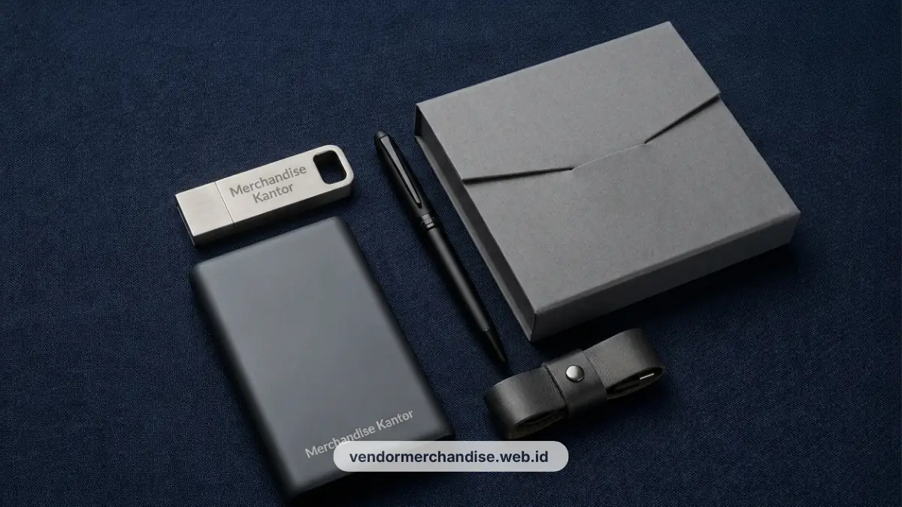

Di era digital, souvenir teknologi kantor menjadi pilihan favorit bagi perusahaan yang ingin memberikan impresi modern dan fungsional kepada mitra bisnis. Perangkat seperti flashdisk dan powerbank tidak hanya berguna untuk mendukung pekerjaan harian, tetapi juga secara efektif memperluas eksposure brand secara konsisten.
Kenapa Souvenir Fungsional Bertahan Lebih Lama sebagai Media Branding
Souvenir fungsional seperti flashdisk dan powerbank bertahan lebih lama sebagai media branding karena digunakan secara rutin dalam aktivitas kerja sehari-hari klien maupun karyawan.
Berbeda dengan souvenir dekoratif yang cenderung hanya dipajang sekali kemudian disimpan, item fungsional terus terlihat setiap kali digunakan, misalnya saat klien mencolokkan flashdisk ke laptop atau mengisi daya ponsel dengan powerbank. Paparan logo yang berulang ini membuat souvenir teknologi menjadi pilihan yang dianggap lebih efisien dari sisi anggaran branding jangka panjang.
Flashdisk Custom Logo sebagai Media Branding
Flashdisk custom logo umumnya tersedia dalam bahan plastik, metal, atau kombinasi keduanya, dengan area cetak logo pada bagian casing.
Desain flashdisk korporat biasanya mengikuti bentuk minimalis agar logo tetap terlihat jelas meskipun ukuran fisik produk terbatas. Kapasitas penyimpanan dapat disesuaikan dengan kebutuhan, mulai dari kapasitas standar untuk dokumen kerja hingga kapasitas lebih besar apabila digunakan untuk keperluan presentasi atau backup data klien.

Powerbank Custom Logo untuk Kebutuhan Mobile
Powerbank custom logo dipilih untuk mendukung mobilitas klien dan karyawan yang sering bepergian atau menghadiri pertemuan di luar kantor.
Desain powerbank korporat umumnya mengutamakan bentuk ramping agar mudah dibawa dalam tas kerja, dengan area cetak logo pada bagian depan yang mudah terlihat saat digunakan. Beberapa perusahaan juga memilih powerbank dengan fitur pengisian nirkabel sebagai nilai tambah pada paket souvenir teknologi yang diberikan kepada klien penting.
Tips Memilih Kapasitas dan Desain Souvenir Teknologi
Pemilihan kapasitas flashdisk dan powerbank sebaiknya disesuaikan dengan pola penggunaan klien serta anggaran pemesanan dalam jumlah besar.
Untuk kebutuhan flashdisk, kapasitas menengah umumnya cukup untuk keperluan dokumen kerja sehari-hari. Sementara untuk powerbank, kapasitas menengah hingga besar lebih disarankan agar dapat mengisi daya perangkat mobile lebih dari satu kali. Desain sebaiknya tetap mengikuti warna dan elemen visual brand perusahaan agar konsisten dengan merchandise korporat lain yang sudah digunakan.
Souvenir teknologi ini juga dapat dipadukan dengan kategori merchandise lain yang dibahas pada artikel pilar paket merchandise kantor eksklusif untuk klien korporat Jakarta.

Pesan Souvenir Teknologi Custom Logo Sekarang
Perkuat branding perusahaan Anda melalui souvenir teknologi yang dipakai klien setiap hari bersama Vendor Merchandise Kantor. Tim kami siap membantu menentukan kapasitas, desain, dan jumlah pemesanan flashdisk maupun powerbank sesuai kebutuhan perusahaan Anda di Jakarta. Hubungi Vendor Merchandise Kantor sekarang untuk konsultasi dan penawaran harga.